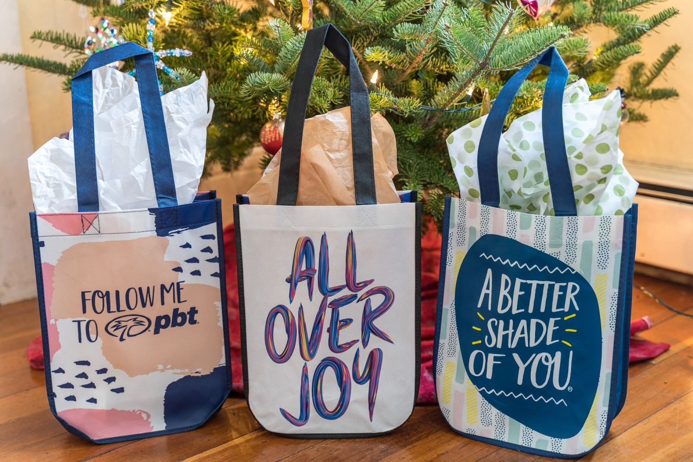

Reusable Gift Bag
Sustainable Stitches Series Sponsored by Sul
Reusable Gift Bag
Stitch sustainably with this versatile, reusable gift bag project. Personalize the fabric to suit the occasion or the recipient and enjoy giving two gifts in one!
Not only does this eco-friendly bag help reduce waste, but it can also be reused time and time again. Whether you’re gifting a birthday present, holiday surprise, or just something special, these handcrafted bags make the perfect wrapping. Plus, they can be upcycled and customized with unique designs, colors, and embellishments to make every gift feel even more thoughtful
Featured Sulky Products:
- Sulky 30 Wt. Cotton Blendables Thread: Grape Wine, Hydrangea, Peacock Plume, Cool Waters, Christmas Trio
- Sulky 50 Wt. Cotton Thread: Medium Peach, Romantic Rose, Caribbean Mist, Mint Julep, Dark Turquoise, Medium Purple, Dark Avocado
- Reusable Fabric Bag (plain cotton or linen, ready for embroidery)
- Embroidery Needle
- Embroidery Hoop (6″ or suitable size)
- Fabric Marking Pen or Chalk (for outlining your design)
Step-by-Step Instructions for the Reusable Gift Bag:
1. Prepare the Fabric
Select a plain reusable fabric bag (cotton or linen works best).
Iron the fabric to ensure it’s smooth and free of wrinkles. This will make embroidery easier.
2. Choose Your Design
Decide on the embroidery design you want to add to your gift bag. For example, you could add a floral design, geometric pattern, or a personalized message like "Handmade with Love" or "For You."
Using a fabric marking pen or chalk, lightly sketch out the design on the area where you want to place the embroidery.
3. Prepare the Embroidery Hoop
Place the fabric in the embroidery hoop, ensuring the section with your design is taut and centered.
4. Thread the Needle
Thread your embroidery needle with Sulky 30 Wt. Cotton Blendables Thread or Sulky 50 Wt. Cotton Thread, depending on the thickness and look you desire. The 30 Wt. thread is thicker and will give you a more visible, textured effect, while the 50 Wt. thread is thinner and works well for finer details.
Choose your thread colors based on the look you want:
Sulky 30 Wt. Cotton Blendables Thread (for bold, gradient color effects):
Grape Wine for a rich, deep touch
Hydrangea for a soft, calming floral shade
Peacock Plume for vibrant, deep blues and greens
Cool Waters for cool, refreshing shades
Christmas Trio for festive, multi-tonal accents
Sulky 50 Wt. Cotton Thread (for finer detail work):
Medium Peach and Romantic Rose for soft, delicate hues
Caribbean Mist and Mint Julep for refreshing greens and blues
Dark Turquoise and Medium Purple for vibrant, contrasting accents
Dark Avocado for earthy, natural tones
5. Start Embroidering
Begin stitching the design with your chosen thread. You can use various embroidery techniques such as:
Running Stitch: for outlining and creating a subtle border
Satin Stitch: for filling in shapes or areas with solid color
French Knots: for adding texture and dimension, perfect for flowers or decorative elements
Back Stitch: for a continuous outline and precise lines
Be sure to maintain an even tension while stitching to ensure a neat, professional look.
6. Add Color Gradients (Optional)
If you’re using Sulky 30 Wt. Cotton Blendables Thread, you can enjoy the natural color transitions within the thread. For example, Cool Waters will transition smoothly from green to blue as you stitch, giving a watercolor effect to your design.
7. Finishing Up
Once you have completed your design, carefully remove the fabric from the embroidery hoop.
Trim any loose threads, and secure the ends of the thread with a small knot at the back of the fabric.
If you used fabric chalk to sketch your design, gently wash the fabric to remove any visible marks.
Iron the finished embroidered fabric again to flatten it and ensure it’s ready for use.
8. Sew the Bag (if necessary)
If you started with plain fabric (rather than a pre-made bag), you will need to sew the fabric into a bag shape. Fold the fabric, pin the sides, and sew along the edges, leaving an opening for the bag’s top.
Add a drawstring or handles to finish the bag.
9. Enjoy Your Finished Reusable Gift Bag!
Your beautifully embroidered and personalized gift bag is now ready to be used. Whether you’re giving it as a gift or using it for your own projects, it’s a sustainable and creative way to showcase your embroidery skills.

Share tips, start a discussion, or ask one of our experts or other students a question.